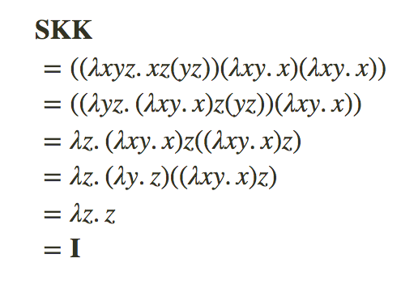
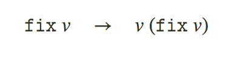

語言是人類理性的工具，而不僅僅是表達思想的媒介，這是公認的真理。 — George Boole
http://dev.stephendiehl.com/fun/003_lambda_calculus.html
Lambda演算
所有函數式語言的基礎都是原子的組合概念，即單個變量的函數抽象。Lambda演算非常簡單的由三個項及其所有有效的遞歸組合組成。
這個緊湊的符號看起來與您在Haskell中使用的符號略有不同，但實際上沒有: λx.xa等同於\x -> x a。這意味著您在上圖中看到的內容將轉換為(\x -> x) (\y -> y)，這等同於id id（當然，其結果為id）。
這三個術語通常在代碼中通過它們名稱的幾個縮寫來表示:
- Var - 標識一個變量
- Lam - 標識一個lambda抽象
- App - 標識一個應用
一個lambda項被稱為綁定它的變量。例如這裏的lambda綁定x，在數學中我們通常會這麼寫:1
f(x) = e
使用lambda演算符號，我們寫為:1
f = λx.e
換句話説，λx.e是一個接收變量x，返回e的函數.1
2
3e := x (Var)
λx.e (Lam)
e e (App)
lambda演算通常被稱為函數式編程的”匯編語言”，它的變體和擴展構成了許多函數編譯器中間形式的基礎，這些中間形式適用於Haskell/Ocaml/StandardML等語言。
我們首先討論的變體稱為無類型的Lambda演算，相比之下，稍後我們將討論類型化的Lambda演算，它是其擴展。
編寫Lambda表達式時，我們將採用機種語法約定。多個表達式的App執行左關聯:1
x1 x2 x3 ...Xn = (...((x1x2)x3)...Xn)
按照慣例，App在語法上盡可能向右擴展，括號用於消除歧異。
在Lambda演算中，每個Lambda抽象綁定一個變量，而lambda抽象的主體可能是另一個lambda抽象，為了方便，我們經常在一個符號上寫多個lambda抽象及其變量。這只是一種語法約定，並不會改變其基本含義。1
λxy.z = λx.λy.z
lambda演算的實際實現允許在表示lambda抽象方面有幾個自由度。
最值得注意的是為綁定變量選擇標識符。
如果一個變量包含在同一個變量綁定的lambda表達式中，則稱該變量bound(範圍內的)。相反，如果變量沒有bound(不在範圍內)，則稱它是free(自由)的。
有free變量的項稱為open term(開項)，而沒有free變量的項稱為closed(閉項)或combinator(組合子)。
e0是一個combinator，而e1不是。
在e1中出現的兩次x，都是bound的，第一個y也是bound的，而第二個y是free的。a也是free的。
多個lambda抽象可以綁定相同的變量名稱，然後，每次出現的變量都由最近的enclosing binder(封閉綁定器)來bound(限定它的範圍)。
例如: 以下表達式中的x變量bound(限定)在內部的lambda上，而y變量bound(限定)在外部lambda上。這種現象稱為name shadowing(名稱陰影)。1
λxy.(λxz.x + y)
SKI Combinators
有三個基本的closed表達式，稱為SKI組合器。
在Haskell中，它們被寫做:1
2
3s f g x = f x (g x)
k x y = x
i x = x
相當引人注目的Moses Schonfinkel表明: 所有的closed lambda表達式都可以僅用S和K組合子表示(甚至是I組合子)。
例如，我們可以很容易的證明SKK可以簡化為I.

在测试lambda演算的实现时，这是一个有用的完整性检查。
Implementation(實現)
具有命名綁定的lambda演算語法 最簡單的實現是使用以下定義:1
2
3
4
5
6type Name = String
data Expr
= Var Name
| App Expr Expr
| Lam Name Expr
lambda表達式有機種詞法語法選擇，我們將簡單的選擇Haskell約定, 它以反斜槓(\)到具有(->)的主體表示lambda，并以空格表示App。命名變量只是字母數字字符序列。
- Logical notation:
𝚌𝚘𝚗𝚜𝚝 = λxy.x - Haskell notation:
const = \x y -> x
此外，可以添加其他術語，如文字數字或布爾值，這使編寫說明性示例更加容易，對於這些，我們將添加一個Lit構造函數。
1 | data Expr |
Substitution(替換)
lambda項(((xx.e)a))的評估通過用參數a替換e中所有自由出現的變量x來進行。
一個單個的替換步驟被稱為reduction(減少/約簡)。
我們將替換application放在要應用的表達式之前的方括號中，[x/a]e将变量x映射到表达式e上的新替换a。1
(λx.e)a → [x/a]e
一個替換元變量被寫作[s].
詳細的替換定義如下:
fv(e)是e中的自由變量集.
使用本地命名的綁定器的根本問題是名稱捕獲的問題，或者如何處理替換與自由變量的名稱衝突的情況。我們需要在最後一種情況下使用該條件，以避免將y重寫為x時會從根本上改變以下表達式含義的幼稚替換。1
[y/x](λx.xy) → λx.xx
按照慣例，我們總是使用capture-avoiding(避免捕獲)替換，只有當變量不在表達式的自由變量集合中時，替換才會繼續進行，如果變量不在表達式的自由變量集合中，則會在其位置上創建一個新的變量。1
(λx.e)a → [x/a]e if x ∉ 𝚏𝚟(a)
有幾個綁定庫和lambda演算語法的替代實現可以避免這些問題，這是一個非常常見的問題，即使是專家也很容易執行錯誤。1
2
3
4
5
6
7
8
9
10
11
12
13
14
(λx. x) y = y
(λx. f x x) y = f y y
(λx. f x x) (g y) = f (g y) (g y)
(λx. λz. f x z) (g y) = λz. f (g y) z
(λx. λz. f (λx. g x) z) (g y) = λz. f (λx. g x) z
(λx. λz. f (λy. f x y) x) (g y) = (λx. λz. f (λt. f x t) x) (g y) = λz. f (λt. f (g y) t) (g y)
Conversion and Equivalences(轉換和相等關係)
Alpha(α)等價
Alpha等价是一种属性（当使用命名的活页夹时），更改活页夹上以及整个表达式主体中的变量不应更改整个表达式的基本含义。 因此，例如，以下是等效的字母。Alpha等價是一種屬性(當使用named binders命名綁定器時),更改綁定器上以及整個表達式主體中的變量不應該更個整個表達式的基本含義，因此，如下是Alpha等價:
Beta-reduction歸約(β)
Beta歸約僅是一個簡單的替換步驟，即在整個表達式主體中用lambda的參數替換由lambda表達式綁定的變量。
Eta-reduction歸約(η)
這可以通過如下事實證明，如果我們把兩邊都應用到一個term(項)上,一個Beta歸約的步驟會把左邊變成右邊。

Eta-expansion(展開)
與Eta-reduction相反的是eta-expansion,它採用一個不飽和的函數並使所有變量顯式綁定在lambda中，當我們討論翻譯成STG時，Eta-expansion將會很重要。
Reduction
λ演算表達式的評估通過Beta-reduction進行。lambda中綁定的變量將在lambda的主體中替換。
在設計空間中，關於如何做到這一點，以及表達式的計算順序，有幾個自由度。
例如，我們可以在lambda下求值，然後將變量代入其中，或者取而代之的是對參數求值，然後替換並減少lambda表達式。
有關更多信息，我們將在評估模型部分中進行討論。1
2
3
4
5
6
7
8
9
10
11
12
13
14Untyped> (\x.x) 1
1
Untyped> (\x y . y) 1 2
2
Untyped> (\x y z. x z (y z)) (\x y . x) (\x y . x)
=> \x y z . (x z (y z))
=> \y z . ((\x y . x) z (y z))
=> \x y . x
=> \y . z
=> z
=> \z . z
\z . z
請注意，最後一次評估是我們先前遇到的SKK。
在無類型的lambda演算中，我們可以自由的表示無限發散的表達式:1
2
3
4
5
6
7
8Untyped> \f . (f (\x . (f x x)) (\x . (f x x)))
\f . (f (\x . (f x x)) (\x . (f x x)))
Untyped> (\f . (\x. (f x x)) (\x. (f x x))) (\f x . f f)
...
Untyped> (\x. x x) (\x. x x)
...
Let
除了App以外，通常將稱為Let綁定的構造器添加到lambda演算語法中。在無類型的lambda演算中，let綁定在語義上等同於應用的lambda表達式。1
𝚕𝚎𝚝 a = e 𝚒𝚗 b := (λa.b)e
在我們的語言中，我們將像在Haskell中一樣編寫let語句。Toplevel表達式將被編寫為let語句，沒有一個主體來表示它們被添加到全局範圍。Haskell語言不使用這個約定，但是Ocaml和StandardML使用這個約定。在Haskell中，对于toplevel声明，前面的let被简单地省略。1
2
3
4
5let S f g x = f x (g x);
let K x y = x;
let I x = x;
let skk = S K K;
目前，let的評估規則與所應用的lambda相同.
在後來的lambda演算變體中，表達式將具有不同的語義，並且將於應用的lambda表達式不同。關於這一點的更多信息將在Hindley-Milner推理部分中進行討論。
Everything Can Be a λ term(一切都可以成为λ项)
0
1
2
succ
pred
not
and
or
add
mul
Recursion(遞歸)
可能最著名的組合器是Curry的Y組合器，在無類型的λ演算中，Y可用於允許表達式包含對自身的引用，以及reduce(歸約/減少)對自身的引用，從而允許遞歸和循環邏輯。Y組合器是許多所謂的定點組合器之一。
Y在給定R的情況下非常特殊，它返回R的固定點。

例如，階乘函數可以根據自身對定點的重複應用來遞歸定義，直到基本情況為0!。
處於樂趣，可以證明Y組合器可以用S和K組合器來表示。
在沒有顯式定點或遞歸let綁定的無類型lambda演算語言中，Y組合器可以僅使用lambda表達式創建這兩個結構。
但是，更常見的是在術語語法中僅添加原子定點運算符或遞歸let作為基本構造。
fix具有評估規則:

與fixpoint(定點)(或Y組合器)一起，我們可以創建let綁定，這些綁定在綁定表達式的主體內包含對自身的引用。我們將這些遞歸let綁定稱為ML方言中的let rec.
目前，我們將實現遞歸let作為簡單的語法糖，並通過以下等效性將定點包裹在lambda綁定周圍。1
let rec x = e1 in e2 = let x = fix (\x. e1) in e2
因此，現在我們可以寫下每個函數式程序員最喜歡的兩個函數:factorial(階乘)和fibonacci(斐波那契)。
為了顯示兩種風格樣式，一種使用let rec編寫，另一種使用顯式fix編寫。1
2
3
4
5
6
7
8
9
10
11
12let fact = fix (\fact -> \n ->
if (n == 0)
then 1
else (n * (fact (n-1))));
let rec fib n =
if (n == 0)
then 0
else if (n==1)
then 1
else ((fib (n-1)) + (fib (n-2)));
Omega Combinator
我們將測試的一個重要的退化案例是omega組合器，該組合器對其自身應用了一個參數。1
ω = λx.xx
當我們將ω組合器應用與自身時，我們發現這會導致無限長的重複reductions鏈.
沒有正常形式的reductions序列被稱為diverge(發散)
我們將此表達式稱為Ω組合器。它是λ演算中的規範循環term(項)。
相當多的靜態類型系統會拒絕使用這個術語，因此它是一個非常有用的測試工具。
Pretty Printing
Hackage提供了許多漂亮的打印庫，這些庫簡化了為我們的數據類型轉儲文本形式的過程。儘管庫之間存在一些差異，但大多數庫都使用同一組組合器。我們將使用Hackage上的pretty包中的Text.PrettyPrint模塊。我們大多數漂亮的打印都是不可避免的樣板，但是會使內部狀態的調適更加容易。
1 | Combinators |
漂亮打印的核心類型是Doc類型，即文檔的抽象類型。這種類型的組合器將操縱此文檔的內部結構，然後最終使用render函數將其內部化為物理字符串。由於我們打算在多種類型之間進行漂亮打印，因此我們將創建一個漂亮類型類。1
2
3
4
5
6
7
8
9module Pretty where
import Text.PrettyPrint
class Pretty p where
ppr :: Int -> p -> Doc
pp :: p -> Doc
pp = ppr 0
首先，我們創建兩個輔助函數來折疊我們的lambda綁定，以便我們可以將它們打印為單個的lambda表達式。1
2
3
4
5
6
7viewVars :: Expr -> [Name]
viewVars (Lam n a) = n : viewVars a
viewVars _ = []
viewBody :: Expr -> Expr
viewBody (Lam _ a) = viewBody a
viewBody x = x
然後，我們創建一個用於對子表達式加括號的輔助函數。1
2
3parensIf :: Bool -> Doc -> Doc
parensIf True = parens
parensIf False = id
最後，我們定義ppr，變量p將指示我們在當前正在打印的結構中的深度。並允許我們進行不同的打印，以在必要時將其與周圍環境進行區分。1
2
3
4
5
6
7
8
9
10
11
12
13
14instance Pretty Expr where
ppr p e = case e of
Lit (LInt a) -> text (show a)
Lit (LBool b) -> text (show b)
Var x -> text x
App a b -> parensIf (p>0) $ (ppr (p+1) a) <+> (ppr p b)
Lam x a -> parensIf (p>0) $
char '\\'
<> hsep (fmap pp (viewVars e))
<+> "->"
<+> ppr (p+1) (viewBody e)
ppexpr :: Expr -> String
ppexpr = render . ppr 0